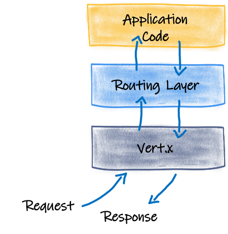
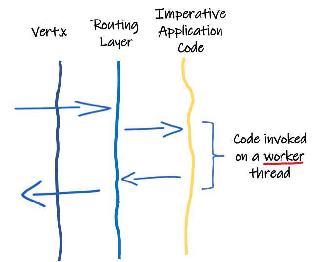

Quarkus - Getting started with Reactive
Quarkusを使用してリアクティブアプリケーションを作成する方法と、Quarkusが提供するさまざまなリアクティブ機能について説明します。このガイドでは、以下の内容を説明します。
-
Quarkusエンジンの概要と、それがどのようにリアクティブを可能にしているかを簡単に説明します。
-
概説Mutiny - Quarkusによって使用されているリアクティブプログラミングライブラリ
-
The difference between RESTEasy, RESTEasy Reactive and Reactive Routes
-
The bootstrap of a reactive application using RESTEasy Reactive
-
リアクティブな JAX-RS エンドポイントの作成（非同期、ストリーム…）
-
リアクティブデータベースアクセス
-
その他のリアクティブAPIの使用
前提条件
このガイドを完成させるには、以下が必要です:
-
less than 15 minutes
-
IDE
-
JDK 8 or 11+ installed with
JAVA_HOMEconfigured appropriately -
Apache Maven 3.6.2+
ソリューション
プロジェクトのブートストラップとそれ以降の解説に従って、ステップバイステップでアプリを作成していくことをお勧めします。
しかしながら、完成した例をすぐ確認することもできます。
アーカイブ をダウンロードするか、gitレポジトリをクローンします：
git clone https://github.com/quarkusio/quarkus-quickstarts.gitソリューションは getting-started-reactive と getting-started-reactive-crud のディレクトリにあります。
The multiple reactive facets of Quarkus
Quarkusはリアクティブです。ボンネットの下を見ると、Quarkusアプリケーションの動力源となっているリアクティブエンジンを見つけることができます。このエンジンはEclipse Vert.x（ https://vertx.io ）です。すべてのネットワークI/Oは、ノンブロッキングでリアクティブなVert.xエンジンを通過します。

2つの例を挙げて、その仕組みを説明してみましょう。入ってくるHTTPリクエストを想像してみてください。Quarkusに組み込まれたHTTPサーバー（Vert.x）がリクエストを受信し、アプリケーションにルーティングします。リクエストが 命令的な メソッド（従来のJAX-RS、 @Blocking …でアノテーションされたコード）をターゲットにしている場合、ルーティング層は ワーカースレッド でリソースメソッドを呼び出し、データが利用可能になるとレスポンスを書き込みます。今のところ、目新しいものも目立ったものもありません。次の図は、この動作を示しています。この場合、アプリケーションコードはワーカースレッドで呼び出され、ビジネスロジックはそのスレッドをブロックすることができます。

しかし、HTTPリクエストがリアクティブなメソッド（RESTEasy Reactiveを使用したJAX-RS、リアクティブなルート、 @Incoming メソッドは @Blocking …でアノテーションされていない）をターゲットにしている場合、ルーティング層はI/Oスレッド上でルートを呼び出し、より高い同時実行性とパフォーマンスなどの多くの利点を与えます。

QuarkusはI/Oスレッドを使用してコードを呼び出すため、コンテキストスイッチを節約し、大規模なスレッドプール管理を回避し、リソースの利用率を向上させます。ただし、コードはそのスレッドをブロックしてはいけ ませ ん。なぜでしょうか？なぜなら、I/O スレッドは複数の同時リクエストを処理するために使用されます。リクエストの処理がいくつかのI/Oを実行する必要があるために進行できなくなるとすぐに、これらのI/Oをスケジュールし、継続(continuation)を渡します。別のリクエストを処理できるスレッドを解放します。スケジュールされたI/Oが完了すると、I/Oスレッドに戻って継続(continuation)が実行されます。
結果として、多くのQuarkusコンポーネントは、データベースアクセス（PostgreSQL、MySQL、Mongoなど）、アプリケーションサービス（メール、テンプレートエンジンなど）、メッセージング（Kafka、AMQPなど）など、リアクティブを念頭に置いて設計されています。しかし、このモデルの恩恵を十分に受けるためには、アプリケーションコードはノンブロッキングで書かれなければなりません。そこで、リアクティブ API を持つことが究極の武器となります。
Mutiny - A reactive programming library
Mutiny は、非同期アクションを表現したり構成したりすることができるリアクティブプログラミングライブラリです。2つのタイプがあります。
-
io.smallrye.mutiny.Uni- for asynchronous action providing 0 or 1 result -
io.smallrye.mutiny.Multi- マルチアイテム（バックプレッシャー付き）ストリーム用
どちらのタイプも lazy で、サブスクリプションパターンに従います。計算は、実際に必要とされる場合にのみ開始されます (すなわち、サブスクライバがエンリストした場合)。
uni.subscribe().with(
result -> System.out.println("result is " + result),
failure -> failure.printStackTrace()
);
multi.subscribe().with(
item -> System.out.println("Got " + item),
failure -> failure.printStackTrace()
);Uni も Multi もイベント駆動型の API を公開しています: 与えられたイベント (成功、失敗など) に対して何をしたいかを表現します。これらのAPIはグループ(操作の種類)に分けられており、より表現力を高め、1つのクラスに100個ものメソッドをアタッチすることを避けています。主な操作の種類は、失敗に反応するもの、完了するもの、アイテムを操作するもの、抽出するもの、収集するものなどです。ナビゲーション可能なAPIでスムーズなコーディングを実現し、結果的にリアクティブ周りの知識をあまり必要としないようにしています。
httpCall
.onFailure().recoverWithItem("my fallback");https://www.reactive-streams.org/ Multi は Reactive Streams Publisher を実装しているので、Reactive Streams のバックプレッシャーメカニズムを実装しています。 Uni へのサブスクリプションは結果に興味があることを示すのに十分なので、 Uni は Publisher を実装していません。これは、Reactive Streams のサブスクリプション/リクエスト式がより複雑であるため、よりシンプルでスムーズな API のアイデアを念頭に置いたものです。
Quarkusのリアクティブな面と命令的な面の統合を受け入れた Uni と Multi は、両方とも命令的構造への橋渡しをしてくれます。たとえば、 Multi を Iterable に変換したり、 Uni .NET で生成されたアイテムを 待っ たりすることができます。
// Block until the result is available
String result = uni.await().indefinitely();
// Transform an asynchronous stream into a blocking iterable
stream.subscribe().asIterable().forEach(s -> System.out.println("Item is " + s));この時点で、あなたがRxJavaやReactorのユーザーであれば、お馴染みの Flowable , Single , Flux , , Mono … Mutinyでは、 Unis と Multis をRX JavaやReactorの型に変換することができます。
Maybe<String> maybe = uni.convert().with(UniRxConverters.toMaybe());
Flux<String> flux = multi.convert().with(MultiReactorConverters.toFlux());しかし、Vert.xはどうでしょうか？Vert.xのAPIはMutiny型を使っても利用できます。以下のスニペットは、Vert.x Web Clientの使い方を示しています。
// Use io.vertx.mutiny.ext.web.client.WebClient
client = WebClient.create(vertx,
new WebClientOptions().setDefaultHost("fruityvice.com").setDefaultPort(443).setSsl(true)
.setTrustAll(true));
// ...
Uni<JsonObject> uni =
client.get("/api/fruit/" + name)
.send()
.onItem().transform(resp -> {
if (resp.statusCode() == 200) {
return resp.bodyAsJsonObject();
} else {
return new JsonObject()
.put("code", resp.statusCode())
.put("message", resp.bodyAsString());
}
});最後になりますが、MutinyにはMicroProfile Context Propagationとの統合が組み込まれているので、リアクティブパイプラインでトランザクションやトレーサビリティデータなどを伝搬することができます。
話はもういい、手を汚すんだ！
プロジェクトのブートストラップ
Quarkusでリアクティブアプリケーションを実装するには、いくつかの方法があります。このガイドでは、Quarkusのリアクティブエンジンの恩恵を受けるRESTEasyの実装であるRESTEasy Reactiveを使用します。デフォルトでは、I/Oスレッド上のHTTPエンドポイントを呼び出します。
従来の RESTEasy を使用することは可能ですが、 quarkus-resteasy-mutiny エクステンションを追加する必要があり、メソッドは ワーカースレッド 上で呼び出されます。つまり、リアクティブプログラミングを使用するとはいえ、ワーカースレッドを必要とし、その目的は達成されません。
|
新しいQuarkusプロジェクトを作成する最も簡単な方法は、ターミナルを開いて以下のコマンドを実行することです：
For Linux and macOS users
mvn io.quarkus:quarkus-maven-plugin:1.11.7.Final:create \
-DprojectGroupId=org.acme \
-DprojectArtifactId=getting-started-reactive \
-DclassName="org.acme.getting.started.ReactiveGreetingResource" \
-Dpath="/hello" \
-Dextensions="resteasy-reactive"
cd getting-started-reactiveFor Windows users
-
cmd を使用する場合は、(前方スラッシュを使用しないでください
\)
mvn io.quarkus:quarkus-maven-plugin:1.11.7.Final:create -DprojectGroupId=org.acme -DprojectArtifactId=getting-started-reactive -DclassName="org.acme.getting.started.ReactiveGreetingResource" -Dpath="/hello" -Dextensions="resteasy-reactive"-
Powershell を使用する場合は、
-Dのパラメータを二重引用符で囲みます。
mvn io.quarkus:quarkus-maven-plugin:1.11.7.Final:create "-DprojectGroupId=org.acme" "-DprojectArtifactId=getting-started-reactive" "-DclassName=org.acme.getting.started.ReactiveGreetingResource" "-Dpath=/hello" "-Dextensions=resteasy-reactive"./getting-started-reactive 内に以下が生成されます。
-
Mavenの構造
-
/helloで公開されているorg.acme.quickstart.ReactiveGreetingResourceリソース -
an associated unit test
-
a landing page that is accessible on
http://localhost:8080after starting the application -
src/main/dockerにあるnativeとjvmの両方のモード用のDockerfileファイルの例 -
the application configuration file
リアクティブな JAX-RS リソース
プロジェクト作成時に、 src/main/java/org/acme/getting/started/ReactiveGreetingResource.java ファイルは以下の内容で作成されています。
package org.acme.getting.started;
import javax.ws.rs.GET;
import javax.ws.rs.Path;
import javax.ws.rs.Produces;
import javax.ws.rs.core.MediaType;
@Path("/hello")
public class ReactiveGreetingResource {
@GET
@Produces(MediaType.TEXT_PLAIN)
public String hello() {
return "Hello RESTEasy Reactive";
}
}これは非常にシンプルなRESTエンドポイントで、"/hello"上のリクエストに対して"Hello RESTEasy Reactive"を返します。RESTEAsy Reactiveを使用しているので、このメソッドはI/Oスレッド上で呼び出されます。
|
ワーカースレッド でこのメソッドを呼び出すようにQuarkusに指示するには、 |
それでは、以下の内容の ReactiveGreetingService クラスを作成してみましょう。
package org.acme.getting.started;
import io.smallrye.mutiny.Multi;
import io.smallrye.mutiny.Uni;
import javax.enterprise.context.ApplicationScoped;
import java.time.Duration;
@ApplicationScoped
public class ReactiveGreetingService {
public Uni<String> greeting(String name) {
return Uni.createFrom().item(name)
.onItem().transform(n -> String.format("hello %s", n));
}
}次に、 ReactiveGreetingResource クラスを以下の内容に合わせて編集します。
package org.acme.getting.started;
import javax.inject.Inject;
import javax.ws.rs.GET;
import javax.ws.rs.Path;
import javax.ws.rs.Produces;
import javax.ws.rs.core.MediaType;
import io.smallrye.mutiny.Multi;
import io.smallrye.mutiny.Uni;
import org.reactivestreams.Publisher;
@Path("/hello")
public class ReactiveGreetingResource {
@Inject
ReactiveGreetingService service;
@GET
@Produces(MediaType.TEXT_PLAIN)
@Path("/greeting/{name}")
public Uni<String> greeting(String name) {
return service.greeting(name);
}
@GET
@Produces(MediaType.TEXT_PLAIN)
public String hello() {
return "hello";
}
}ReactiveGreetingService クラスには、 Uni を生成する簡単なメソッドが含まれています。この例では、結果として得られるアイテムがすぐに出力されますが、非同期 API で Uni を生成することは想像できます。これについては、このガイドで後ほど説明します。
それでは、以下でアプリケーションを起動します。
./mvnw quarkus:dev実行したら、 http://localhost:8080/hello/greeting/neo を開いて、期待通りのグリーティングメッセージが表示されているか確認してください。
ストリームの取り扱い
これまでは、非同期の結果を返すだけでした。このセクションでは、複数のアイテムを伝えるストリームを使ってアプリケーションを拡張します。これらのストリームは Kafka や他のデータソースからのものでも構いませんが、物事をシンプルに保つために、定期的にグリーティングメッセージを生成するだけにします。
ReactiveGreetingService で、以下のメソッドを追加します。
public Multi<String> greetings(int count, String name) {
return Multi.createFrom().ticks().every(Duration.ofSeconds(1))
.onItem().transform(n -> String.format("hello %s - %d", name, n))
.transform().byTakingFirstItems(count);
}
import io.smallrye.mutiny.Multi; と import java.time.Duration; のステートメントを追加する必要があるかもしれません。
|
1秒ごとに greeting メッセージを生成し、 count メッセージの後に停止します。
ReactiveGreetingResource で、以下のメソッドを追加します。
@GET
@Produces(MediaType.APPLICATION_JSON)
@Path("/greeting/{count}/{name}")
public Multi<String> greetings(int count, String name) {
return service.greetings(count, name);
}このエンドポイントは、アイテムをJSON配列としてクライアントにストリームします。メッセージの名前と数は、パスパラメータを使用してパラメータ化されます。
そのため、エンドポイントを呼び出すと、次のようなものが生成されます。
$ curl http://localhost:8080/hello/greeting/3/neo
["hello neo - 0", "hello neo - 1", "hello neo - 2"]また、 Multi を返すことで Server-Sent Event レスポンスを生成することもできます。
@GET
@Produces(MediaType.SERVER_SENT_EVENTS)
@RestSseElementType(MediaType.TEXT_PLAIN)
@Path("/stream/{count}/{name}")
public Multi<String> greetingsAsStream(int count, String name) {
return service.greetings(count, name);
}先ほどのスニペットとの違いは、生成される型と、各イベントの型を示す @RestSseElementType アノテーションだけです。 @Produces アノテーションは SERVER_SENT_EVENTS を定義しているので、JAX-RS は各（入れ子になった）イベントのコンテンツタイプを知るために必要です。
import org.jboss.resteasy.reactive.RestSseElementType; の文を追加する必要があるかもしれません。
|
以下で結果を見ることができます。
$ curl -N http://localhost:8080/hello/stream/5/neo
data: hello neo - 0
data: hello neo - 1
data: hello neo - 2
data: hello neo - 3
data: hello neo - 4リアクティブ API の使用
Using Quarkus reactive APIs
QuarkusはMutinyモデルを使用した多くのリアクティブAPIを提供しています。このセクションでは、リアクティブPostgreSQLドライバを使用して、ノンブロッキングでリアクティブな方法でデータベースと対話する方法を見ていきます。
以下で新規プロジェクトを作成します。
mvn io.quarkus:quarkus-maven-plugin:1.11.7.Final:create \
-DprojectGroupId=org.acme \
-DprojectArtifactId=getting-started-reactive-crud \
-DclassName="org.acme.reactive.crud.FruitResource" \
-Dpath="/fruits" \
-Dextensions="resteasy-reactive,resteasy-reactive-jackson,reactive-pg-client"
cd getting-started-reactive-crudこのアプリケーションはPostgreSQLデータベースと対話しているので、DBが必要です。
docker run --ulimit memlock=-1:-1 -it --rm=true --memory-swappiness=0 \
--name postgres-quarkus-reactive -e POSTGRES_USER=quarkus_test \
-e POSTGRES_PASSWORD=quarkus_test -e POSTGRES_DB=quarkus_test \
-p 5432:5432 postgres:11.2続いて、データソースを設定してみましょう。 src/main/resources/application.properties を開き、以下の内容を追加します。
quarkus.datasource.db-kind=postgresql
quarkus.datasource.username=quarkus_test
quarkus.datasource.password=quarkus_test
quarkus.datasource.reactive.url=postgresql://localhost:5432/quarkus_test
myapp.schema.create=true最初の3行はデータソースを定義しています。最後の行は、アプリケーションが初期化されたときにいくつかの項目を挿入するかどうかを示すためにアプリケーションで使用されます。
では、 エンティティを 作成しましょう。以下の内容で org.acme.reactive.crud.Fruit クラスを作成します。
package org.acme.reactive.crud;
import io.smallrye.mutiny.Multi;
import io.smallrye.mutiny.Uni;
import io.vertx.mutiny.pgclient.PgPool;
import io.vertx.mutiny.sqlclient.Row;
import io.vertx.mutiny.sqlclient.RowSet;
import io.vertx.mutiny.sqlclient.Tuple;
import java.util.stream.StreamSupport;
public class Fruit {
public Long id;
public String name;
public Fruit() {
// default constructor.
}
public Fruit(String name) {
this.name = name;
}
public Fruit(Long id, String name) {
this.id = id;
this.name = name;
}
public static Multi<Fruit> findAll(PgPool client) {
return client.query("SELECT id, name FROM fruits ORDER BY name ASC").execute()
// Create a Multi from the set of rows:
.onItem().transformToMulti(set -> Multi.createFrom().items(() -> StreamSupport.stream(set.spliterator(), false)))
// For each row create a fruit instance
.onItem().transform(Fruit::from);
}
public static Uni<Fruit> findById(PgPool client, Long id) {
return client.preparedQuery("SELECT id, name FROM fruits WHERE id = $1").execute(Tuple.of(id))
.onItem().transform(RowSet::iterator)
.onItem().transform(iterator -> iterator.hasNext() ? from(iterator.next()) : null);
}
public Uni<Long> save(PgPool client) {
return client.preparedQuery("INSERT INTO fruits (name) VALUES ($1) RETURNING (id)").execute(Tuple.of(name))
.onItem().transform(pgRowSet -> pgRowSet.iterator().next().getLong("id"));
}
public Uni<Boolean> update(PgPool client) {
return client.preparedQuery("UPDATE fruits SET name = $1 WHERE id = $2").execute(Tuple.of(name, id))
.onItem().transform(pgRowSet -> pgRowSet.rowCount() == 1);
}
public static Uni<Boolean> delete(PgPool client, Long id) {
return client.preparedQuery("DELETE FROM fruits WHERE id = $1").execute(Tuple.of(id))
.onItem().transform(pgRowSet -> pgRowSet.rowCount() == 1);
}
private static Fruit from(Row row) {
return new Fruit(row.getLong("id"), row.getString("name"));
}
}この エンティティに は、データベースから行を検索、更新、削除するためのいくつかのフィールドとメソッドが含まれています。これらのメソッドは、結果が取得されると非同期的に生成されるので、 Unis または Multis のいずれかを返します。反応型PostgreSQLクライアントは既に Uni と Multi のインスタンスを提供していることに注意してください。つまり、データベースからの結果を ビジネスに適した オブジェクトに変換するだけです。
アプリケーションの起動時にデータベースを初期化する目的で、以下の内容の DBInit という名前のクラスを作成します。
package org.acme.reactive.crud;
import io.quarkus.runtime.StartupEvent;
import io.vertx.mutiny.pgclient.PgPool;
import org.eclipse.microprofile.config.inject.ConfigProperty;
import javax.enterprise.context.ApplicationScoped;
import javax.enterprise.event.Observes;
@ApplicationScoped
public class DBInit {
private final PgPool client;
private final boolean schemaCreate;
public DBInit(PgPool client, @ConfigProperty(name = "myapp.schema.create", defaultValue = "true") boolean schemaCreate) {
this.client = client;
this.schemaCreate = schemaCreate;
}
void onStart(@Observes StartupEvent ev) {
if (schemaCreate) {
initdb();
}
}
private void initdb() {
client.query("DROP TABLE IF EXISTS fruits").execute()
.flatMap(r -> client.query("CREATE TABLE fruits (id SERIAL PRIMARY KEY, name TEXT NOT NULL)").execute())
.flatMap(r -> client.query("INSERT INTO fruits (name) VALUES ('Kiwi')").execute())
.flatMap(r -> client.query("INSERT INTO fruits (name) VALUES ('Durian')").execute())
.flatMap(r -> client.query("INSERT INTO fruits (name) VALUES ('Pomelo')").execute())
.flatMap(r -> client.query("INSERT INTO fruits (name) VALUES ('Lychee')").execute())
.await().indefinitely();
}
}次に、この Fruit クラスを FruitResource . FruitResource クラスを以下の内容に合わせて編集します。
package org.acme.reactive.crud;
import java.net.URI;
import javax.ws.rs.Consumes;
import javax.ws.rs.DELETE;
import javax.ws.rs.GET;
import javax.ws.rs.POST;
import javax.ws.rs.PUT;
import javax.ws.rs.Path;
import javax.ws.rs.Produces;
import javax.ws.rs.core.MediaType;
import javax.ws.rs.core.Response;
import javax.ws.rs.core.Response.ResponseBuilder;
import javax.ws.rs.core.Response.Status;
import io.smallrye.mutiny.Multi;
import io.smallrye.mutiny.Uni;
import io.vertx.mutiny.pgclient.PgPool;
@Path("fruits")
@Produces(MediaType.APPLICATION_JSON)
@Consumes(MediaType.APPLICATION_JSON)
public class FruitResource {
private final PgPool client;
public FruitResource(PgPool client) {
this.client = client;
}
private void initdb() {
client.query("DROP TABLE IF EXISTS fruits").execute()
.flatMap(r -> client.query("CREATE TABLE fruits (id SERIAL PRIMARY KEY, name TEXT NOT NULL)").execute())
.flatMap(r -> client.query("INSERT INTO fruits (name) VALUES ('Kiwi')").execute())
.flatMap(r -> client.query("INSERT INTO fruits (name) VALUES ('Durian')").execute())
.flatMap(r -> client.query("INSERT INTO fruits (name) VALUES ('Pomelo')").execute())
.flatMap(r -> client.query("INSERT INTO fruits (name) VALUES ('Lychee')").execute())
.await().indefinitely();
}
@GET
public Multi<Fruit> get() {
return Fruit.findAll(client);
}
@GET
@Path("{id}")
public Uni<Response> getSingle(Long id) {
return Fruit.findById(client, id)
.onItem().transform(fruit -> fruit != null ? Response.ok(fruit) : Response.status(Status.NOT_FOUND))
.onItem().transform(ResponseBuilder::build);
}
@POST
public Uni<Response> create(Fruit fruit) {
return fruit.save(client)
.onItem().transform(id -> URI.create("/fruits/" + id))
.onItem().transform(uri -> Response.created(uri).build());
}
@PUT
@Path("{id}")
public Uni<Response> update(Long id, Fruit fruit) {
return fruit.update(client)
.onItem().transform(updated -> updated ? Status.OK : Status.NOT_FOUND)
.onItem().transform(status -> Response.status(status).build());
}
@DELETE
@Path("{id}")
public Uni<Response> delete(Long id) {
return Fruit.delete(client, id)
.onItem().transform(deleted -> deleted ? Status.NO_CONTENT : Status.NOT_FOUND)
.onItem().transform(status -> Response.status(status).build());
}
}このリソースは、 Fruit クラスが生成した結果に基づいて Uni と Multi のインスタンスを返します。
Using Vert.x clients
先ほどの例では、Quarkusが提供する サービス を使用しています。また、Vert.xクライアントを直接使用することもできます。
まず、 quarkus-vertx の エクステンションが存在することを確認してください。存在しない場合は、以下のコマンドを実行して エクステンションを有効にします。
mvn io.quarkus:quarkus-maven-plugin:1.11.7.Final:add-extensions \
-Dextensions=vertxまたは、手動で quarkus-vertx を依存関係に追加してください。
<dependency>
<groupId>io.quarkus</groupId>
<artifactId>quarkus-vertx</artifactId>
</dependency>Vert.x APIのMutinyバージョンがあります。このAPIは独立してインポートできるいくつかのアーティファクトに分かれています。
| groupId:artifactId | 説明 |
|---|---|
|
Mutiny API for Vert.x Core |
|
Mutiny API for the Vert.x Mail Client |
|
Mutiny API for the Vert.x Web Client |
|
Mutiny API for the Vert.x Mongo Client |
|
Mutiny API for the Vert.x Redis Client |
|
Mutiny API for the Vert.x Cassandra Client |
|
Mutiny API for the Vert.x Consul Client |
|
Mutiny API for the Vert.x Kafka Client |
|
Mutiny API for the Vert.x AMQP Client |
|
Mutiny API for the Vert.x RabbitMQ Client |
また、 http://smallrye.io/smallrye-reactive-utils/apidocs/ で利用可能な API を確認できます。
例を挙げてみましょう。以下の依存関係をアプリケーションに追加します。
<dependency>
<groupId>io.smallrye.reactive</groupId>
<artifactId>smallrye-mutiny-vertx-web-client</artifactId>
</dependency>Vert.x Web ClientのMutiny APIを提供します。すると、以下のようにWebクライアントを利用することができます。
package org.acme.vertx;
import io.smallrye.mutiny.Uni;
import io.vertx.core.json.JsonObject;
import io.vertx.ext.web.client.WebClientOptions;
import io.vertx.mutiny.core.Vertx;
import io.vertx.mutiny.ext.web.client.WebClient;
import org.jboss.resteasy.annotations.jaxrs.PathParam;
import javax.annotation.PostConstruct;
import javax.inject.Inject;
import javax.ws.rs.GET;
import javax.ws.rs.Path;
import javax.ws.rs.Produces;
import javax.ws.rs.core.MediaType;
@Path("/fruit-data")
public class ResourceUsingWebClient {
@Inject
Vertx vertx;
private WebClient client;
@PostConstruct
void initialize() {
this.client = WebClient.create(vertx,
new WebClientOptions().setDefaultHost("fruityvice.com").setDefaultPort(443).setSsl(true)
.setTrustAll(true));
}
@GET
@Produces(MediaType.APPLICATION_JSON)
@Path("/{name}")
public Uni<JsonObject> getFruitData(@PathParam("name") String name) {
return client.get("/api/fruit/" + name)
.send()
.map(resp -> {
if (resp.statusCode() == 200) {
return resp.bodyAsJsonObject();
} else {
return new JsonObject()
.put("code", resp.statusCode())
.put("message", resp.bodyAsString());
}
});
}
}重要なポイントは2つあります。
-
インジェクションされた Vert.x インスタンスは、Vert.x の Mutiny バリアントである
io.vertx.mutiny.core.Vertxタイプを持っています。 -
Web クライアントは
io.vertx.mutiny.ext.web.client.WebClientから作成されます。
Vert.x APIのMutinyバージョンも提供しています。
-
sendAndAwait.andAwaitのようなandAwaitメソッドは、結果が得られるまで呼び出し元のスレッドがブロックされていることを示しています。そのような方法でイベントループ/IOスレッドをブロックしないように注意してください。 -
andForgetwriteAndForgetのようなUniを返すメソッドが利用可能です。andForgetは操作の成否を示す結果のUniを必要としないことを示しています。しかし、サブスクライブしないと操作が発動しないことを覚えておいてください。andForgetはこれを管理してくれるうえに、サブスクリプションも管理します。 -
toMultimethods allowing to transform a Vert.xReadStreaminto aMulti -
toBlockingIterable/toBlockingStreamメソッドは、Vert.xReadStreamをブロッキング可能な iterable またはブロッキング可能なjava.util.Streamに変換することができます。
Using RxJava or Reactor APIs
Mutiny は RxJava 2 と Project Reactor の型を Uni と Multi に変換するユーティリティを提供します。
RxJava 2のコンバータは以下の依存関係にあります。
<dependency>
<groupId>io.smallrye.reactive</groupId>
<artifactId>mutiny-rxjava</artifactId>
</dependency>そこで、RxJava 2 の型を返す API ( Completable , Single , Maybe , Observable , Flowable ) を持っている場合は、以下のように Unis と Multis を作成します。
import io.smallrye.mutiny.converters.multi.MultiRxConverters;
import io.smallrye.mutiny.converters.uni.UniRxConverters;
// ...
Uni<Void> uniFromCompletable = Uni.createFrom().converter(UniRxConverters.fromCompletable(), completable);
Uni<String> uniFromSingle = Uni.createFrom().converter(UniRxConverters.fromSingle(), single);
Uni<String> uniFromMaybe = Uni.createFrom().converter(UniRxConverters.fromMaybe(), maybe);
Uni<String> uniFromEmptyMaybe = Uni.createFrom().converter(UniRxConverters.fromMaybe(), emptyMaybe);
Uni<String> uniFromObservable = Uni.createFrom().converter(UniRxConverters.fromObservable(), observable);
Uni<String> uniFromFlowable = Uni.createFrom().converter(UniRxConverters.fromFlowable(), flowable);
Multi<Void> multiFromCompletable = Multi.createFrom().converter(MultiRxConverters.fromCompletable(), completable);
Multi<String> multiFromSingle = Multi.createFrom().converter(MultiRxConverters.fromSingle(), single);
Multi<String> multiFromMaybe = Multi.createFrom().converter(MultiRxConverters.fromMaybe(), maybe);
Multi<String> multiFromEmptyMaybe = Multi.createFrom().converter(MultiRxConverters.fromMaybe(), emptyMaybe);
Multi<String> multiFromObservable = Multi.createFrom().converter(MultiRxConverters.fromObservable(), observable);
Multi<String> multiFromFlowable = Multi.createFrom().converter(MultiRxConverters.fromFlowable(), flowable);Unis と Multis を RxJava 型に変換することもできます。
Completable completable = uni.convert().with(UniRxConverters.toCompletable());
Single<Optional<String>> single = uni.convert().with(UniRxConverters.toSingle());
Single<String> single2 = uni.convert().with(UniRxConverters.toSingle().failOnNull());
Maybe<String> maybe = uni.convert().with(UniRxConverters.toMaybe());
Observable<String> observable = uni.convert().with(UniRxConverters.toObservable());
Flowable<String> flowable = uni.convert().with(UniRxConverters.toFlowable());
// ...
Completable completable = multi.convert().with(MultiRxConverters.toCompletable());
Single<Optional<String>> single = multi.convert().with(MultiRxConverters.toSingle());
Single<String> single2 = multi.convert().with(MultiRxConverters
.toSingle().onEmptyThrow(() -> new Exception("D'oh!")));
Maybe<String> maybe = multi.convert().with(MultiRxConverters.toMaybe());
Observable<String> observable = multi.convert().with(MultiRxConverters.toObservable());
Flowable<String> flowable = multi.convert().with(MultiRxConverters.toFlowable());Project Reactorコンバータは、以下の依存関係で利用できます。
<dependency>
<groupId>io.smallrye.reactive</groupId>
<artifactId>mutiny-reactor</artifactId>
</dependency>そこで、Reactorの型を返すAPI( Mono , Flux )を持っている場合は、以下のように Unis と Multis を作成します。
import io.smallrye.mutiny.converters.multi.MultiReactorConverters;
import io.smallrye.mutiny.converters.uni.UniReactorConverters;
// ...
Uni<String> uniFromMono = Uni.createFrom().converter(UniReactorConverters.fromMono(), mono);
Uni<String> uniFromFlux = Uni.createFrom().converter(UniReactorConverters.fromFlux(), flux);
Multi<String> multiFromMono = Multi.createFrom().converter(MultiReactorConverters.fromMono(), mono);
Multi<String> multiFromFlux = Multi.createFrom().converter(MultiReactorConverters.fromFlux(), flux);また、 Unis と Multis を Reactor タイプに変換することもできます。
Mono<String> mono = uni.convert().with(UniReactorConverters.toMono());
Flux<String> flux = uni.convert().with(UniReactorConverters.toFlux());
Mono<String> mono2 = multi.convert().with(MultiReactorConverters.toMono());
Flux<String> flux2 = multi.convert().with(MultiReactorConverters.toFlux());Using CompletionStages or Publisher API
CompletionStage , CompletableFuture , Publisher を使った API に対面している場合、双方向に変換することができます。まず、 Uni も Multi も CompletionStage から作成することも、 Supplier<CompletionStage> から作成することもできます。例えば、以下のようになります。
CompletableFuture<String> future = Uni
// Create from a Completion Stage
.createFrom().completionStage(CompletableFuture.supplyAsync(() -> "hello"));Uni 上で、あなたはまた、 subscribeAsCompletionStage() を使用して CompletionStage を生成することができます。 Uni によって放出されたアイテムまたは障害を取得するだろう CompletionStage を生成します。
createFrom().publisher(Publisher) を使って Unis と Multis を Publisher のインスタンスから作成することもできます。 Uni を toMulti を使って Publisher に変換することもできます。実際、 Multi は Publisher を実装しています。